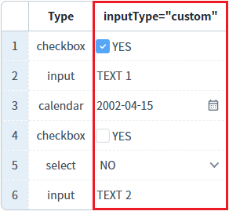
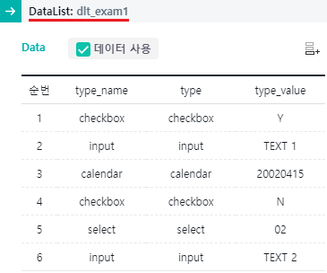
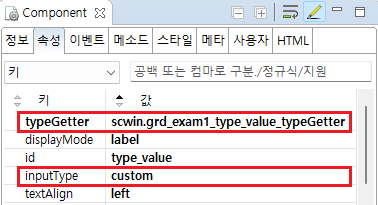

GridView의 셀의 'inputType'을 동적으로 설정한 예제입니다. 이 기능은 바디 컬럼의 'inputType' 속성을 'custom'으로 설정하고, 바디 컬럼의 'typeGetter' 속성을 설정하여 구현되었습니다.
조건에 따라 셀의 inputType 설정하기
1
컬럼 [inputType="custom"]의 inputType을 확인합니다.
컬럼 [유형]의 값에 따라 inputType이 아래와 같이 지정되었습니다. - checkbox : inputType="checkbox" - input : inputType="input" - calendar : inputType="calendar" - checkbox : inputType="checkbox" - select : inputType="select" - input : inputType="input"
Image 1.브라우저(Chrome) 실행 예시

1
STEP 1: GridView에 출력할 DataList 생성하기
동적으로 inputType을 지정하기 위해 참조할 컬럼을 포함하여 생성합니다.
컬럼 ID | 용도 |
|---|---|
type_name | GridView에 출력용 데이터. 헤더 컬럼명 : 유형. |
type | 동적으로 inputType을 생성하기 위한 참조 데이터. |
type_value | 동적으로 inputType이 생성되는 컬럼의 value로 할당됩니다. GridView의 헤더 컬럼 [inputType="custom"]에 출력됩니다. |
Image 2.웹스퀘어 스튜디오의 데이터컬렉션 설정 예시

GridView와 연결 방법은 생략되었습니다.
2
STEP 2: GridView 바디 컬럼의 속성을 정의합니다.
동적으로 inputType을 지정할 바디 컬럼의 속성을 아래와 같이 정의합니다.
예제 파일에서는 바디 컬럼의 ID "type_value"에 정의되었습니다.
[필수] inputType="custom"
동적으로 inputType을 설정.
[필수] typeGetter="scwin.grd_exam1_type_value_typeGetter"
inputType의 정보를 반환할 메소드명
Image 3.웹스퀘어 스튜디오의 Component View - 속성 설정 예시

Example 1.Source
<!-- gridView 의 소스 본문 예시 --> <w2:gridView dataList="data:dlt_exam1"> <!-- 중략 --> <w2:gBody id="gBody1"> <w2:row id="row2"> <!-- 중략 --> <w2:column inputType="custom" typeGetter="scwin.grd_exam1_type_value_typeGetter" id="type_value"> </w2:column> <!-- 중략 --> </w2:row> </w2:gBody> </w2:gridView>
3
STEP 3: inputType을 반환할 메소드를 정의합니다.
컬럼의 'typeGetter' 속성에 정의한 'scwin.grd_exam1_type_value_typeGetter' 메소드를 정의합니다.
Example 2.Script
/** * grd_exam1의 컬럼 [inputType="custom"]의 inputType 반환 * 속성 [typeGetter]에 메소드명이 정의되어있습니다. */ scwin.grd_exam1_type_value_typeGetter = function(argInfo) { var rowIndex = argInfo.rowIndex; var colIndex = argInfo.colIndex; var returnInfo; //inputType 정보가 담긴 JSON객체 var jsnRow = dlt_exam1.getRowJSON(rowIndex); //현 행의 JSON 데이터 반환받기 var inputType = jsnRow.type || "notype"; //중복되지 않는 ID 생성 var strID = "dynamic_" + inputType + "_" + rowIndex + "_" + colIndex; switch (inputType) { case "checkbox" : returnInfo = { id : strID, inputType : "checkbox", options : {valueType: "other", trueValue: "Y", falseValue: "N", checkboxLabel: "YES" } }; break; case "calendar" : returnInfo = { id : strID, inputType : "calendar", options : {viewType: "icon", dataType: "date", displayFormat: "yyyy-MM-dd"} }; break; case "select" : //itemSet 속성은 select에 출력할 콤보 리스트에 연결할 DataList의 정보입니다. returnInfo = { id : strID, inputType : "select", options : {viewType: "icon"}, itemSet : { nodeset: "data:dlt_code", label: "label", value: "code" } }; break; case "input" : default: returnInfo = { id : strID, inputType : "text", options : {} }; break; } return returnInfo; };
[body column] inputType
[body column] typeGetter